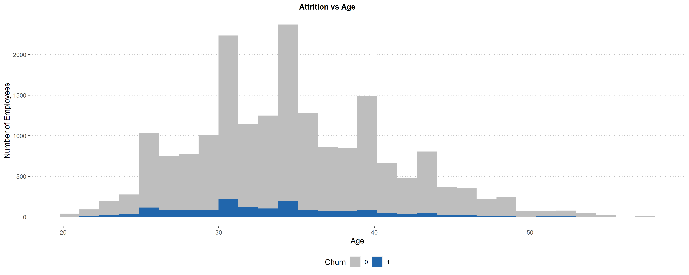

X MMM.YY Emp_ID Age Gender City Education_Level Salary Dateofjoining
1 1 2016-01-01 1 28 Male C23 Master 57387 2015-12-24
2 2 2016-02-01 1 28 Male C23 Master 57387 2015-12-24
3 3 2016-03-01 1 28 Male C23 Master 57387 2015-12-24
4 4 2017-11-01 2 31 Male C7 Master 67016 2017-11-06
5 5 2017-12-01 2 31 Male C7 Master 67016 2017-11-06
6 6 2016-12-01 4 43 Male C13 Master 65603 2016-12-07
LastWorkingDate Joining.Designation Designation Total.Business.Value
1 <NA> 1 1 2381060
2 <NA> 1 1 -665480
3 2016-03-11 1 1 0
4 <NA> 2 2 0
5 <NA> 2 2 0
6 <NA> 2 2 0
Quarterly.Rating
1 2
2 2
3 2
4 1
5 1
6 11. Background
You work for the human capital department of a large corporation. The Board is worried about the relatively high turnover, and your team must look into ways to reduce the number of employees leaving the company. The team needs to understand better the situation, which employees are more likely to leave, and why. Once it is clear what variables impact employee churn, you can present your findings along with your ideas on how to attack the problem.
Your challenge
Create a report that covers the following:
- Which department has the highest employee turnover? Which one has the lowest?
- Investigate which variables seem to be better predictors of employee departure.
- What recommendations would you make regarding ways to reduce employee turnover?
2. Import Libraries
- library(tidyverse)
- library(ggplot2)
- library(skimr)
- library(janitor)
- library(knitr)
- library(radiant)
- library(colorspace)
- library(gridExtra)
- library(jtools)
- library(dplyr)
- library(MASS)
3. Prepare and Analyze the Data
The variables are defined as follow:
MMMM-YY: Reporting Date (Monthly)
Emp_ID: Unique id for employees
Age: ge of the employee
Gender: Gender of the employee
City: City Code of the employee
Education_Level: Education level : Bachelor, Master or College
Salary: Salary of the employee
Dateofjoining: Joining date for the employee
LastWorkingDate: Last date of working for the employee
Joining Designation: Designation of the employee at the time of joining
Designation: Designation of the employee at the time of reporting
TotalBusinessValue: The total business value acquired by the employee in a month (negative business indicates cancellation/refund of sold insurance policies)
Quarterly Rating: Quarterly rating of the employee: 1,2,3,4 (higher is better)
X MMM.YY Emp_ID Age
Min. : 1 Min. :2016-01-01 Length:19104 Min. :21.00
1st Qu.: 4777 1st Qu.:2016-06-01 Class :character 1st Qu.:30.00
Median : 9552 Median :2016-12-01 Mode :character Median :34.00
Mean : 9552 Mean :2016-12-10 Mean :34.65
3rd Qu.:14328 3rd Qu.:2017-07-01 3rd Qu.:39.00
Max. :19104 Max. :2017-12-01 Max. :58.00
Gender City Education_Level Salary
Female: 8001 Length:19104 Bachelor:6864 Min. : 10747
Male :11103 Class :character College :5913 1st Qu.: 42383
Mode :character Master :6327 Median : 60087
Mean : 65652
3rd Qu.: 83969
Max. :188418
Dateofjoining LastWorkingDate Joining.Designation Designation
Min. :2010-04-01 Min. :2015-12-31 Min. :1.000 1:5202
1st Qu.:2013-11-29 1st Qu.:2016-06-06 1st Qu.:1.000 2:6627
Median :2015-09-12 Median :2016-12-20 Median :1.000 3:4826
Mean :2015-04-29 Mean :2016-12-21 Mean :1.691 4:2144
3rd Qu.:2016-11-05 3rd Qu.:2017-07-03 3rd Qu.:2.000 5: 305
Max. :2017-12-28 Max. :2017-12-28 Max. :5.000
NA's :17488
Total.Business.Value Quarterly.Rating
Min. :-6000000 1:7679
1st Qu.: 0 2:5553
Median : 250000 3:3895
Mean : 571662 4:1977
3rd Qu.: 699700
Max. :33747720
This datase contains 19104 obs. of 13 variables
The median age is 34 years old
Now, we need to know that in order to predict if the employee will leave the company or not can be best predicted if we have last working day info available and hence although the missing percentage is high, it’s not because of Null values but the employees are not planning to leave the company and hence have not provided the info.Therefore we should not remove this feature from our data, instead we need to treat this as our target variable.
Salary goes from 42383 to 188418 dollars
Show the code
empl_churn <- empl_turnover %>% mutate(Churn= ifelse(is.na(LastWorkingDate), "0", "1"))Turnover
Number of employees that left the company:
The overall attrition rate in the company is 8.5%, which means that 1,616 employees have left the company.
Show the code
result <- single_prop(empl_churn, var = "Churn", lev = "1")
summary(result)Single proportion test (binomial exact)
Data : empl_churn
Variable : Churn
Level : 1 in Churn
Confidence: 0.95
Null hyp. : the proportion of 1 in Churn = 0.5
Alt. hyp. : the proportion of 1 in Churn not equal to 0.5
p ns n n_missing sd se me
0.085 1,616 19,104 0 0.278 0.002 0.004
diff ns p.value 2.5% 97.5%
-0.415 1,616 < .001 0.081 0.089 ***
Signif. codes: 0 '***' 0.001 '**' 0.01 '*' 0.05 '.' 0.1 ' ' 1Show the code
empl_churn$Churn.Numeric <- as.numeric(as.factor(empl_churn$Churn))-1
glimpse(empl_churn)Rows: 19,104
Columns: 16
$ X <int> 1, 2, 3, 4, 5, 6, 7, 8, 9, 10, 11, 12, 13, 14, 15…
$ MMM.YY <date> 2016-01-01, 2016-02-01, 2016-03-01, 2017-11-01, …
$ Emp_ID <chr> "1", "1", "1", "2", "2", "4", "4", "4", "4", "4",…
$ Age <int> 28, 28, 28, 31, 31, 43, 43, 43, 43, 43, 29, 29, 2…
$ Gender <fct> Male, Male, Male, Male, Male, Male, Male, Male, M…
$ City <chr> "C23", "C23", "C23", "C7", "C7", "C13", "C13", "C…
$ Education_Level <fct> Master, Master, Master, Master, Master, Master, M…
$ Salary <int> 57387, 57387, 57387, 67016, 67016, 65603, 65603, …
$ Dateofjoining <date> 2015-12-24, 2015-12-24, 2015-12-24, 2017-11-06, …
$ LastWorkingDate <date> NA, NA, 2016-03-11, NA, NA, NA, NA, NA, NA, 2017…
$ Joining.Designation <int> 1, 1, 1, 2, 2, 2, 2, 2, 2, 2, 1, 1, 1, 3, 3, 3, 3…
$ Designation <fct> 1, 1, 1, 2, 2, 2, 2, 2, 2, 2, 1, 1, 1, 3, 3, 3, 3…
$ Total.Business.Value <int> 2381060, -665480, 0, 0, 0, 0, 0, 0, 350000, 0, 0,…
$ Quarterly.Rating <fct> 2, 2, 2, 1, 1, 1, 1, 1, 1, 1, 1, 1, 1, 1, 1, 2, 2…
$ Churn <chr> "0", "0", "1", "0", "0", "0", "0", "0", "0", "1",…
$ Churn.Numeric <dbl> 0, 0, 1, 0, 0, 0, 0, 0, 0, 1, 0, 0, 1, 0, 0, 0, 0…Are the employees leaving the destination at the same rate?
- The data shows that Destination 1 has the highest employee turnover rate, followed by 2 and destination 5 has the lowest rate.
Show the code
empl_turnover_prop <- empl_churn %>%
tabyl(Designation, Churn) %>%
adorn_percentages("row")
kable(empl_turnover_prop, caption = "Destination vs Attrition")| Designation | 0 | 1 |
|---|---|---|
| 1 | 0.8854287 | 0.1145713 |
| 2 | 0.9094613 | 0.0905387 |
| 3 | 0.9301699 | 0.0698301 |
| 4 | 0.9673507 | 0.0326493 |
| 5 | 0.9573770 | 0.0426230 |
Attrition vs Age
The majority of employees that left the organization are in their 30’s , and the proportion steadily declined.
What does it mean for the organization? Well,
Show the code
### Age vs Turnover
empl_churn %>%
group_by(Age, Churn)%>%
ggplot(aes(x = Age, fill = Churn)) +
geom_histogram(bins = 30L) +
scale_fill_manual(values=c("gray", "#2166AC"))+
ggpubr::theme_pubclean()+
labs( x= "Age",
y= "Number of Employees",
title = "Attrition vs Age")+
theme(plot.title = element_text(size =12, face = "bold", hjust = 0.45),
legend.position="bottom")
Show the code
names(empl_churn) [1] "X" "MMM.YY" "Emp_ID"
[4] "Age" "Gender" "City"
[7] "Education_Level" "Salary" "Dateofjoining"
[10] "LastWorkingDate" "Joining.Designation" "Designation"
[13] "Total.Business.Value" "Quarterly.Rating" "Churn"
[16] "Churn.Numeric"